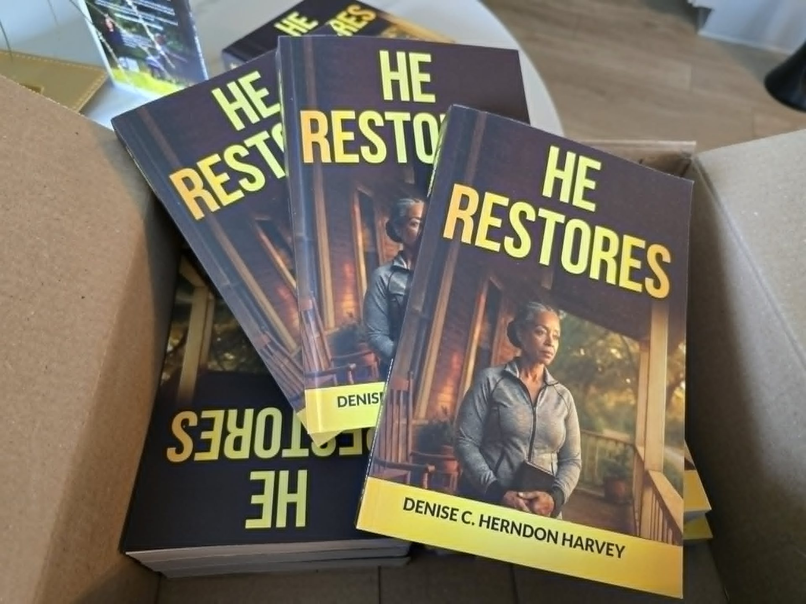

Instead of starting with “Meet Denise,” this is where the story starts — with what was broken, and what came after.

There is a moment in every broken story where you have to decide: is this the end, or is this where He begins?
He Restores is Denise C. Herndon Harvey’s deeply personal account of watching faith rebuild what life had taken — family, identity, and hope. It is not a polished highlight reel. It is the honest middle: the waiting, the doubting, the slow return of light.
Denise writes from the hurt and hopelessness she has witnessed within families, using her own restoration as proof that healing is not only possible — it is promised.
Every restoration story begins in the same place — a season where hope feels like a language you’ve forgotten how to speak. Denise opens here, honestly, without rushing past the pain to get to the lesson.
Not a loud faith. A small one. The kind that keeps showing up even when it cannot see the ending — and the kind that turns out to be enough.
Healing rarely arrives on schedule. This chapter walks through the unglamorous middle — the therapy, the prayer, the falling down and getting back up.
Forgiveness is reframed not as forgetting, but as freedom — the moment Denise stopped carrying what was never hers to fix alone.
Family, identity, and purpose — restored piece by piece, in a way that could only be explained as grace.
The book closes not with an ending, but an invitation — for the reader to believe their own story of restoration is still being written.